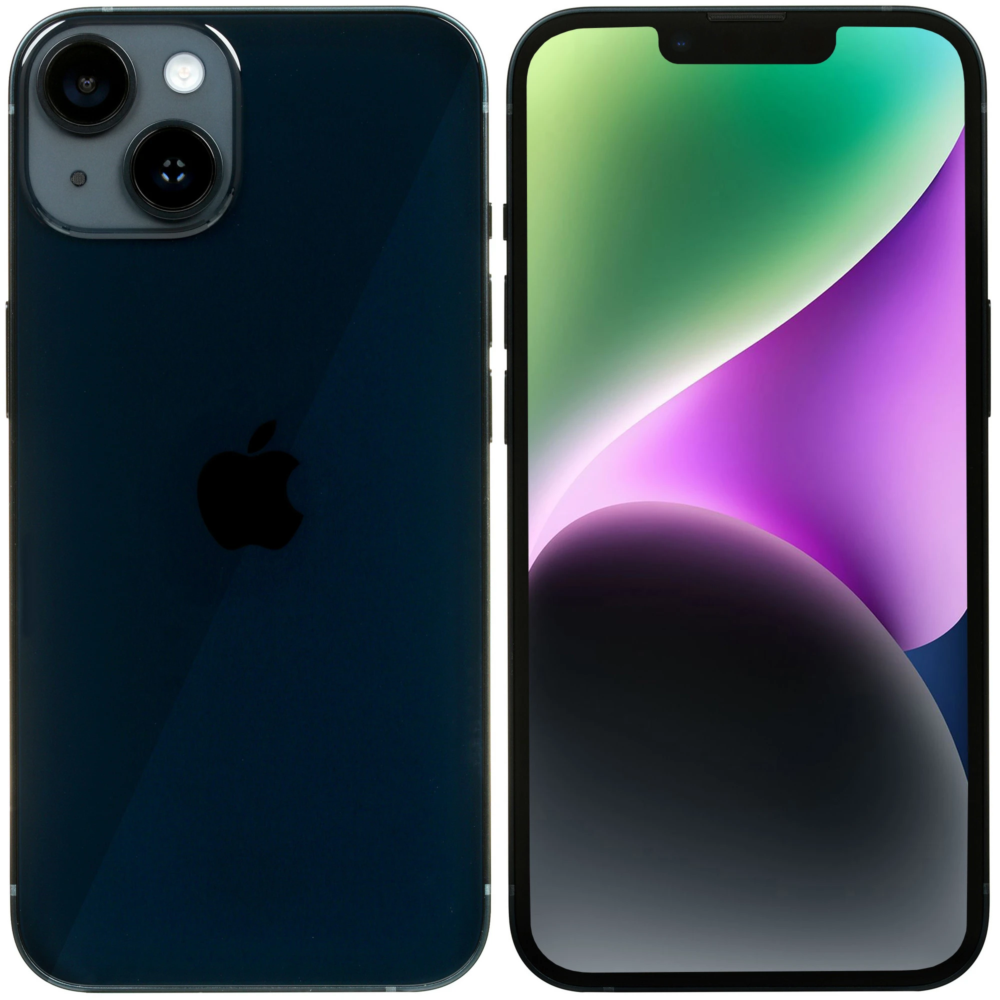
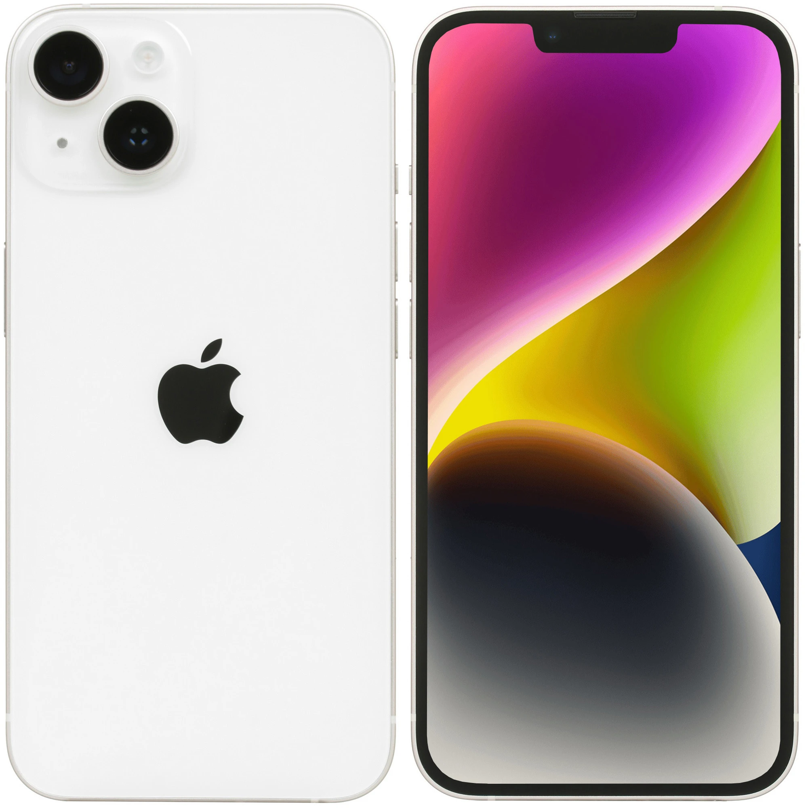
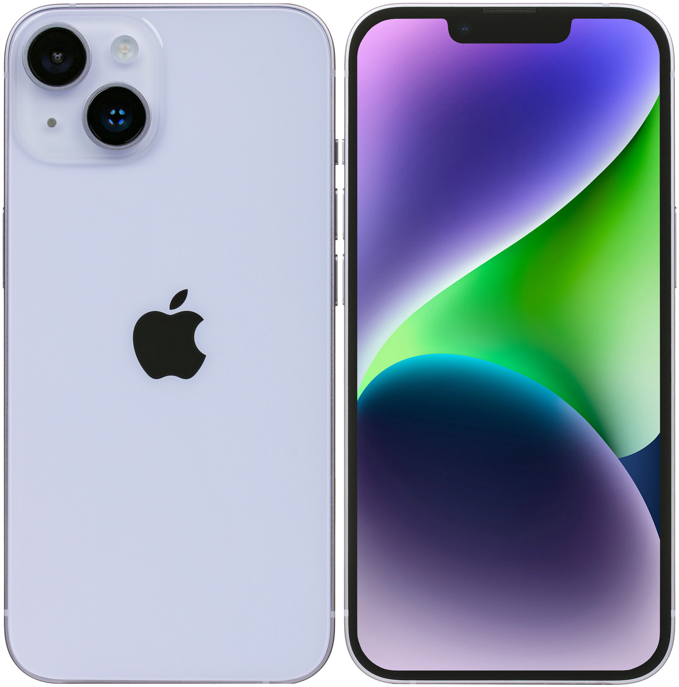

Раньше определиться с выбором Айфона было просто: Apple каждый год выпускала один новый телефон, а старый убирала из продажи. Сейчас выбор больше: компания выпускает по четыре-пять моделей в год, а некоторые старые оставляет в продаже по сниженной цене. Рассказываю, как выбрать Айфон под разные задачи и бюджет. В большинстве случаев лучшие модели актуальные, но в каждой номинации есть хорошие альтернативы подешевле.
iPhone 14, Plus, 14 Pro и 14 Pro Max (2022)
В 2022 году Apple показали новые флагманы — базовый айфон 14, версию с увеличенным экраном — 14 Plus и две профессиональных версии — 14 Pro и 14 Pro Max.
-
Базовые модели работают на базе чипа A15 Bionic и отличаются только размером экрана. Айфон 14 получил экран с диагональю 6,1 дюйм, а 14 Plus имеет увеличенный дисплей с диагональю 6.7 дюйма.
-
Базовые модели выпускаются в нескольких цветах: «Небесно-голубой», фиолетовый, «Тёмная ночь», «Сияющая звезда», Красный PRODUCT(RED) и жёлтый.
-
iPhone 14 Pro и Pro Max работают на новом процессоре Apple A16 Bionic, который стал ещё более производительный и энергоэффективный.
-
Одним из главных изменений стало появление «Динамического острова», который появился вместо привычной «чёлки». Он способен показывать воспроизводимую музыку, спортивные результаты, телефонные звонки и многое другое, не отвлекая вас от того, чем вы занимаетесь.
-
Был добавлен режим Always-On и технология ProMotion, которая интеллектуально увеличивает или уменьшает частоту обновления от 1 до 120 Гц, благодаря чему всегда будет виден ваш персонализированный экран блокировки.
-
Основная камера Pro-версий получила усовершенствованный сенсор, который максимально использует 48 мегапикселей, адаптируясь к тому, что вы снимаете. Также, в систему камер был добавлен 2-х кратный телеобъектив с оптическим зумом, что даёт вам больше возможностей для фото и максимальное качество при кадрировании и приближении фото.
-
Кинематографический режим теперь позволяет снимать видео в формате 4K HDR 24 кадра в секунду, благодаря чему вы можете снимать по всем стандартам кино. Также, в Pro-моделях была улучшена стабилизация видео, благодаря чему, если вы снимаете с внедорожника или бежите рядом с объектом съемки, то ваши видео будут плавными и чёткими даже без стабилизатора.
-
Во всей линейке iPhone 14 была представлена революционная функция безопасности, которая позволяет обнаруживать серьезные автомобильные аварии и автоматически вызывать службы экстренной помощи. А с функцией Emergency вы можете напрямую соединиться с спутником, что даёт вам возможность обмениваться сообщениями со службами экстренной помощи, когда вы находитесь вне зоны действия сотовой связи или Wi-Fi.
-
Pro-линейка доступна в нескольких цветах: «Глубокий фиолетовый», «Золотой», серебристый и «Космический чёрный».


